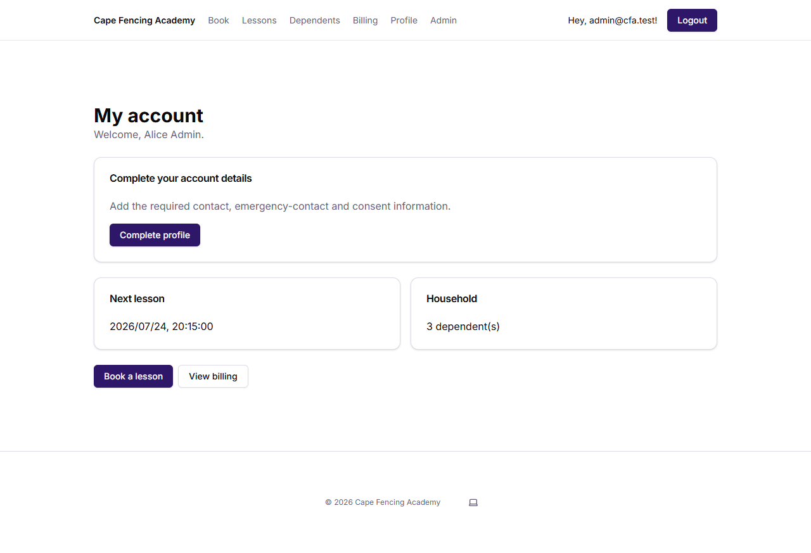

P2·Phase 00·Open
Admin personal dashboard counts all visible households
The admin’s personal account summary uses every household row visible through staff authorization.
Evidence

Expected
Personal household UI should filter to Alice’s household while admin-wide access remains available in staff workflows.